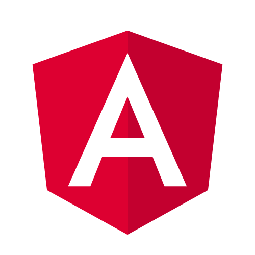
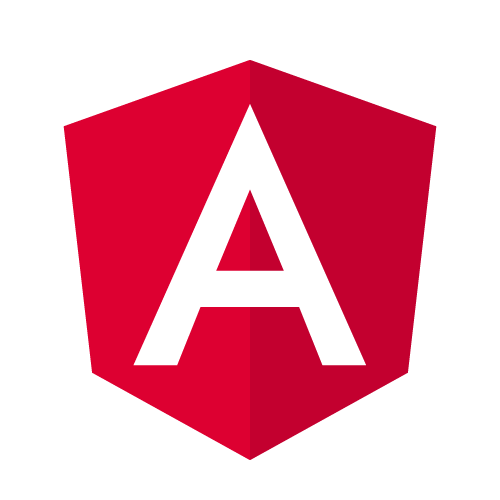

My current/past involvement in development usually revolves around class projects, freelance projects and internship projects
System Development
For my degree's Final Year Project, me and my partner team up together to develop a management system for a clinic owned by my partner's dad. This project is developed using Laravel where my involvement on front-end side was 100% and back-end 50%.
Intership Days
Just a simple mock up website that requested by a client during my internship. I used boostrap 3 to develop the pages. This project is still ongoing.
Form handling using javascript.
Freelance Developer
An on-going side-project of me and my friend which started last December. We are hired by a group of researchers in a university to develop a web app for their implementation stage. This project has gone several major changes from a basic mobile app to and advance web application. We are using Angular JS and RubyonRails for this project development.
Technology that I'm familiar with
 
